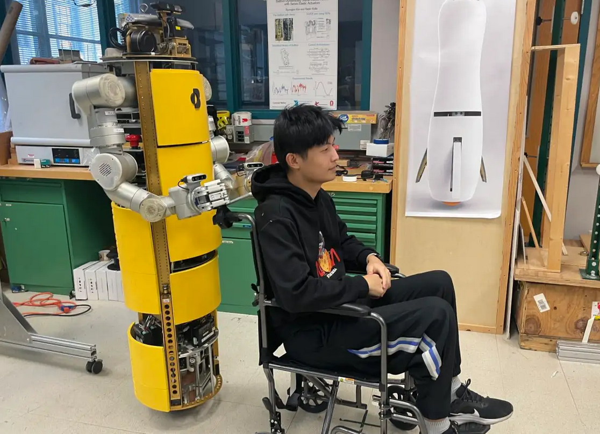

|
Cunxi(Jimmy) Dai I'm a MSR student at CMU RI. I'm fortunately to be advised by Prof. Ralph Hollis. Previous to CMU, I worked with Prof. Zhenzhong Jia, Prof. Mingming Zhang at SUSTech and Prof. Hugh Herr at MIT Media Lab. |

|
ResearchI'm interested in mobile manipulation, robot perception and control. |
|

|
Wheelchair Maneuvering with a Single-Spherical-Wheeled Balancing Mobile Manipulator
Cunxi Dai*, Xiaohan Liu*, Roberto Shu, Ralph Hollis, IROS, 2024 arXiv / Youtube / New Scientist Wheelchair maneuvering with Ballbot that balance on a single-spherical wheel. |
Projects |
 |
Wheelchair Maneuvering with a Single-Spherical-Wheeled Balancing Mobile Manipulator
Cunxi Dai*, Xiaohan Liu*, Roberto Shu, Ralph Hollis, IROS, 2024 Youtube / arXiv Wheelchair maneuvering with Ballbot that balance on a single-spherical wheel. |
|
Template from Jon Barron. |